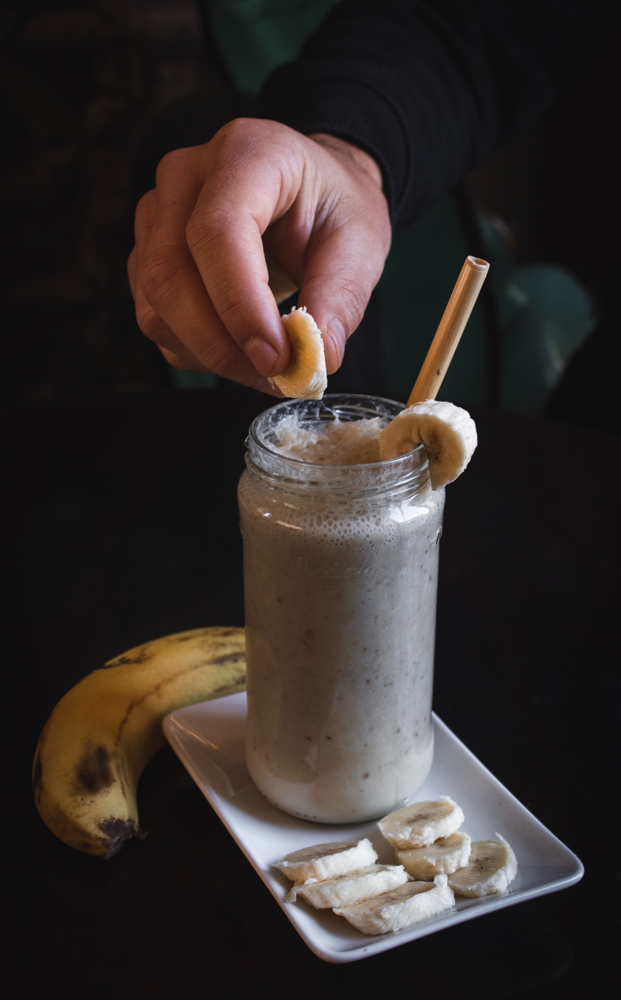

Peant Butter Preworkout Shake

For those trying to gain mass in the gym, but struggle to get enough food in, it works as a lifehack to simply drink calories.
This peanut butter preworkout shake contains 44 grams of protein, 90 grams of carbs and just over 1000 calories.
Ideal for skinny people trying to put on some size, without eating junk.
Ingredients
- 90g Oats
- 1 or 2 Bananas
- 60g Peanut Butter
- 250ml Milk
- 10g sunflower seeds
- Water (optional)
Instructions
- Put the oats, peanut butter and milk in a blender
- Slice the banana and throw it in the blender too. Note: the ideal number of bananas to use is 1 and a half, so I recommend saving half of the banana
for another day. If you don't want to do this then you can simply choose to use 1 or 2 bananas depending on how sweet you want it
- Start blending!
- Once blended, finally add the sunflower seeds for an extra crunch. Make sure you have de-shelled them if they're not pre de-shelled
- If the consistency of the shake is too thick for you to get down, feel free to add some water and enjoy!
To find other recipes, visit our Homepage.